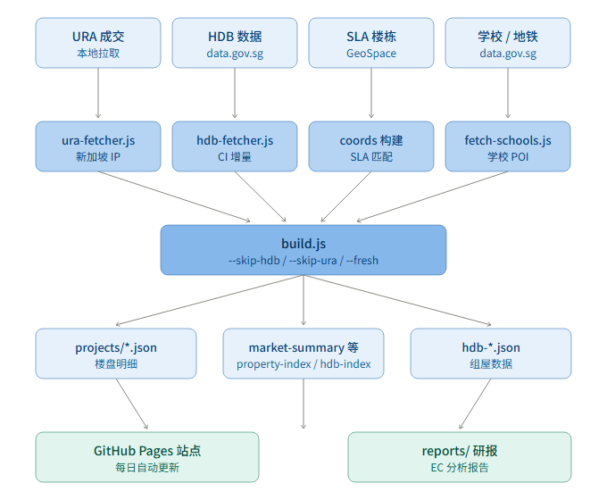
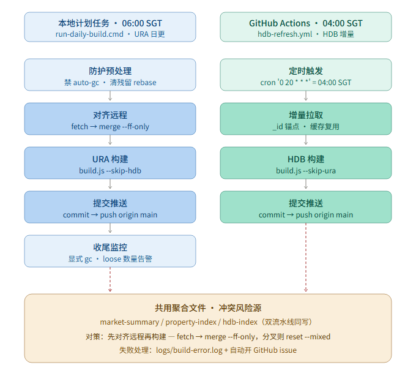

新加坡房产数据看板 · 架构与自动化时序图
数据管道 自动化 冲突对策
本页用两张图说明整个项目的结构与每日运维流程。所有图均与 README.md 共享同一份源文件（SVG 可二次编辑）。

scripts/build.js，支持 --skip-hdb / --skip-ura / --fresh 三种模式。data/projects/*.json）、聚合索引（market-summary / property-index）、HDB 系列（hdb-*.json）。reports/ 研报（独立发布到 sg-property 仓库）。
run-daily-build.cmd，由 Windows 任务计划程序触发，5 个步骤串行执行：
git auto-gc，清除残留 rebase 状态。fetch → merge --ff-only origin/main（分叉则 reset --mixed）。node build.js --skip-hdb（仅 URA 数据构建）。commit → push origin main。git gc --quiet，loose objects 超 6700 告警。.github/workflows/hdb-refresh.yml，cron: '0 20 * * *' UTC：
_id 锚点 + data/hdb_cache 缓存复用）。node build.js --skip-ura。hdb* / property-index 等真实变更才 commit → push。market-summary.json / property-index.json / hdb-index.json 这三个聚合文件写入。历史教训（2026-08-06）：本地脚本原"先 commit 后 pull --rebase"，冲突残留 → 次日构建在 detached HEAD 上 commit，数据永远推不上去。
先对齐远程再构建。已固化在 run-daily-build.cmd：
git fetch origingit merge --ff-only origin/main（落后快进）git reset --mixed origin/main（丢弃本地 commit，数据由本次构建重新生成，reflog 可找回）build.js这样 push 必为 fast-forward，不会出现非快进冲突。失败处理：写 logs/build-error.log + 自动开 GitHub issue（去重，避免重复告警）。